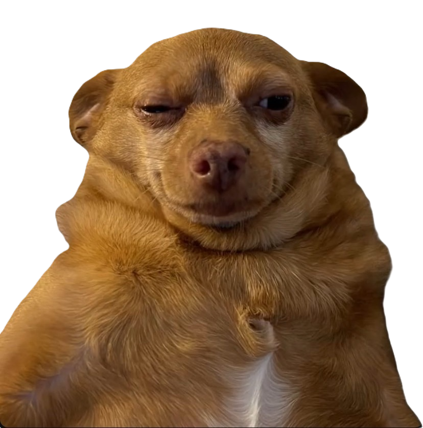
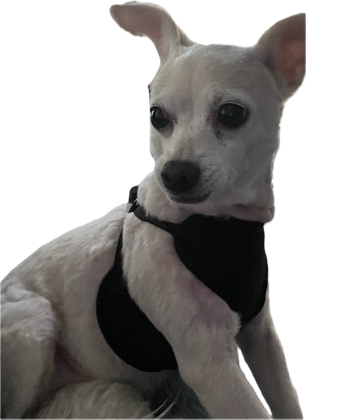

Welcome to Taisei's Web Site！
Taisei's Web Site
 
☰
🏠ホーム
📞お問い合わせ
⚙️設定
×
My Products
Tab 2
Tab 3
My Products
自動クリックExcel
この製品は、あなたのリモートワークをより便利にするための画期的なアイテムです。
Download
Preparing...
Tab 2 Content
ここにタブ2の内容を表示します。
Tab 3 Content
ここにタブ3の内容を表示します。